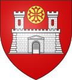
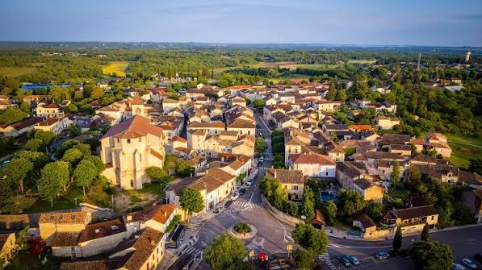

Lalbenque
la Truffe Noire


⟹ Capitale de la Truffe Noire du Quercy ⟸

Village typique des causses du Quercy, Lalbenque doit sa renommée à un champignon souterrain aussi discret que précieux : la truffe noire, Tuber melanosporum. Sur ces sols calcaires plantés de chênes verts et pubescents, la trufficulture se développe au XIXe siècle en remplacement de la vigne, décimée par le phylloxéra, et fait bientôt de Lalbenque la « capitale de la truffe et du Quercy ».

Longtemps animé par les allées et venues de courtiers venus par le train sur la ligne Paris-Toulouse, le marché se transforme et s'institutionnalise dans les années 1960 : c'est en 1962 que naît le cérémonial codifié qui rythme aujourd'hui encore chaque mardi d'hiver, de décembre à mars, rue du Marché aux Truffes.
À 14 h 30 précises, la cloche de la mairie sonne l'ouverture du marché au détail ; à 15 h, c'est au coup de sifflet que s'ouvre le marché de gros aux particuliers — un cérémonial immuable qui fait la légende de Lalbenque.
— Tradition du marché aux truffes de LalbenqueReconnue « Site Remarquable du Goût » dès 1994 puis inscrite en 2020 à l'Inventaire du Patrimoine Culturel Immatériel de la France, la culture de la truffe noire du Quercy à Lalbenque perpétue un savoir-faire rural devenu une véritable identité collective.
Pour approfondir : la truffe noire du Quercy est le fruit souterrain d'un champignon vivant en symbiose avec les racines d'arbres, notamment les chênes. Les sols calcaires, drainants et aérés des causses offrent des conditions favorables à Tuber melanosporum. Autour des arbres truffiers, le mycélium peut provoquer une zone pauvre en végétation appelée le « brûlé », indice bien connu des trufficulteurs.
Le paysage raconte lui aussi cette économie rurale : murets de pierre sèche, gariottes ou caselles, truffières et dolmens ponctuent les environs. Le Sentier des truffes, boucle pédestre facile d'environ 10,9 km au départ de Lalbenque, permet d'en découvrir plusieurs exemples, ainsi que la fontaine de La Rouquette. Le village se situe par ailleurs sur le GR 65, chemin de Saint-Jacques-de-Compostelle.
Documentation : Lalbenque — Tourisme Lot · Marché aux truffes — site officiel · Le Sentier des truffes.
La Tuber melanosporum, ou truffe noire du Quercy, trouve à Lalbenque un terroir idéal : sols calcaires, chênes truffiers et climat sec des causses. Champignon souterrain vivant en symbiose avec les racines de l'arbre truffier, elle se récolte de novembre à mars et se négocie chaque mardi entre 300 et 700 euros le kilo selon l'abondance de la récolte, faisant du marché de Lalbenque le plus important du Sud-Ouest.
Marché aux truffes : chaque mardi de décembre à début mars, le rendez-vous incontournable pour vivre le cérémonial du « diamant noir ».
Fête de la Truffe : en saison, animations et dégustations autour du champignon complètent l'effervescence hebdomadaire du marché.
Alentours : à seulement 20 minutes de Cahors, le Pays de Lalbenque-Limogne invite à découvrir dolmens, gariottes en pierre sèche et sentiers moussus du Parc naturel régional des Causses du Quercy.
Meilleure période : de décembre à début mars, pour assister au marché aux truffes ; le reste de l'année pour découvrir les causses au calme.
Marché : chaque mardi en saison, de 13h30 à 15h30 environ, rue du Marché aux Truffes et sous la halle de la mairie.
Se loger : chambres d'hôtes typiques du Quercy ; l'Office de Tourisme du Pays de Lalbenque-Limogne propose les journées découverte de la truffe, sur réservation.